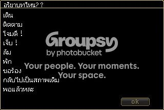
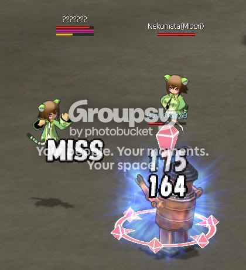

-----------------------------------------------------------------------------------------------------------
Skill ของ Breeder
-----------------------------------------------------------------------------------------------------------
หลังจากเปลี่ยนเป็น Breeder แล้วเรามาดูกันดีกว่าว่า Breeder Skill ต่างๆมีอะไรบ้าง แน่นอนว่า skill เกือบทั้งหมดนั้นเกี่ยวกับสัตว์เลี้ยงเป็นหลักแน่นอน
ก่อนอื่นนั้นต้องบอกกันล่วงหน้าเล็กน้อยคือ Skill ต่างๆของ Breeder นั้นจะมีเพียง level 1 เท่านั้นทุก skill และจะได้รับ Skill มาอัตโนมัติเมื่อมี Job Level ของ Breeder ถึงที่กำหนดเอาไว้ กล่าวคือผู้เล่นจะไม่สามารถเลือกได้ว่าจะ up skill อะไรบ้างนั่นเอง แต่ก็ถือว่าเป็นการดีเหมือนกันสำหรับผู้เล่นที่คิดไม่ออกจะ up อะไรดี
เรามาดูกันดีกว่าว่า Skill ทั้งหมด 30 Job รวม 12 Skill มีอะไรบ้าง สำหรับขาคนรักสัตว์รับรองว่าชอบแน่นอน
 Go!
Go!
เงื่อนไข : Job Level 1
ชนิด : Active Skill (ระบุเป้าหมายที่เป็นศัตรู)
- สั่งให้ Pet เข้าโจมตีเป้าหมายที่กำหนดเอาไว้
- อย่างไรก็ตาม การที่ Pet โจมตีเป้าหมายนั้นในระบบของ ECO ถือเป็นการโจมตีที่ไม่เกี่ยวกับผู้เล่นใดๆ
- หาก Pet กำจัดเป้าหมายลงได้โดยที่ผู้เล่นไม่ร่วมโจมตีเป้าหมายนั้นเลย ผู้เล่นจะไม่ได้รับ EXP, Item ใดๆจาก Monster แม้แต่นิดเดียว
- ในขณะเดียวกัน การที่ Pet ไปโจมตีเป้าหมายใดๆก็ไม่ทำให้ผู้ที่กำลังโจมตีเป้าหมายนั้นๆอยู่ถูกแย่งค่า EXP ไป
- ซึ่งผลนี้รวมไปถึงตอนที่ผู้เล่นทำการขี่ Pet ด้วยเช่นมังกร, หนอนซิ่ง ผู้เล่นจะไม่ได้รับค่า Exp, Item ใดๆเลย
 Come Back!
Come Back!
เงื่อนไข : Job Level 3
ชนิด : Active Skill (ไม่ต้องระบุเป้าหมาย)
- บังคับให้ Pet หยุดโจมตีและเดินกลับมาหาเจ้าของ
- บางครั้งเมื่อสั่งและ Pet โดนโจมตีอาจจะไม่ยอมกลับมา ให้ผู้เล่นเดินซักก้าวสองก้าว Pet จะยอมวิ่งกลับมา
- อย่างไรก็ดี หลังจาก 3-4 วินาทีหลังสั่ง Come Back! Pet จะหันกลับไปโต้ตอบศัตรูอีกครั้ง
- เป็น skill ที่จำเป็นมากในการที่จะฝึกค่าการตั้งรับของ Pet
 Biology
Biology
เงื่อนไข : Job Level 5
ชนิด : Passive Skill
- ทำให้ผลของการใช้ Veggie Stick (อาหารแท่งเพิ่มความสามารถของ Pet) มีประสิทธิภาพเพิ่มขึ้น (ยังไม่แน่ใจ กำลังปั่น Keetin มาทดสอบ)
 Belief Proof
Belief Proof
เงื่อนไข : Job Level 8
ชนิด : Active Skill (ไม่ต้องระบุเป้าหมาย)
- สั่งให้ Pet ขยับท่าทางต่างๆตามที่ต้องการ เอาไว้ให้ Pet เล่นท่าทางแปลกๆได้ด้วยนะ

รายการที่สั่งได้ ..... เหมือนตอนสั่งบนสวนลอยฟ้าเลยแฮะ
Heal Fire
เงื่อนไข : Job Level 10
ชนิด : Active Skill (ระบุพื้นที่ที่ต้องการ)
ใช้ SP : 25
- ระยะเวลาแสดงผล 60 วินาที
- สร้างแคมป์ไฟขนาดเล็กขึ้นมายังจุดที่กำหนด
- แคมป์ไฟนี้จะเพิ่ม HP 50 หน่วยให้กับ Pet, Marionette, Charm Monster แต่เพิ่ม HP 20 หน่วยให้กับผู้เล่น
- มีผลเพิ่ม HP ทุกๆ 5 วินาที กินพื้นที่บริเวณ 5*5
- มีผลคล้ายการ Heal หมู่ (มีโอกาสที่ Monster จะเข้ามาโจมตีผู้ใช้ Heal Fire)
 ที่เห็น Heal ทีละ 20 น่ะผู้เล่นนะ ที่ 50 น่ะไชเท้า(pet)
Mastere
ที่เห็น Heal ทีละ 20 น่ะผู้เล่นนะ ที่ 50 น่ะไชเท้า(pet)
Mastere (Ride)
เงื่อนไข : Job Level 13
ชนิด : Passive Skill
- Skill สำคัญแสดงถึงคุณสมบัติที่จะสามารถครอบครอง Dark Dragon ไว้ได้อย่างถูกต้อง
- เพิ่มความสามารถของสัตว์เลี้ยงชนิดขับขี่ให้สูงขึ้น (ผลการเพิ่มความสามารถยังไม่สามารถระบุได้แน่ชัด)
- เมื่อมี Skill นี้ผู้เล่นจะสามารถไปทำ Quest รับ Dark Dragon จากเจ้าหน้าที่สมาคม Breeder ได้
- ต้องมี Skill นี้อยู่จึงจะสามารถขี่ Dark Dragon ได้
 Goat
Goat
เงื่อนไข : Job Level 14
ชนิด : Active Skill (ระบุเป้าหมายที่เป็น Pet, ผู้เล่น)
ใช้ SP : 12
- ระยะเวลาแสดงผล 60 วินาที
- เพิ่มพลังโจมตีให้กับเป้าหมายที่เป็น Pet หรือผู้เล่นชั่วคราว
- เพิ่มพลังโจมตี 6-12 (min atk+6 / max atk +12)
- สำหรับผู้เล่นที่ชอบโจมตีแรงๆอาจจะ Buff ใส่ตัวเองกันก็ได้
Grow Up
เงื่อนไข : Job Level 15
ชนิด : Passive Skill
- เพิ่มอัตราการเติบโตของ Pet ทำให้สามารถฝึกได้ง่ายขึ้น งานนี้ไม่ต้องฝึกกันแต่ในโรงเรียนแล้วล่ะ
- จากการฝึก คาดว่ามีผลซ้อนกับ Breeding ในโรงเรียนทำให้ฝึกได้เร็วกว่าปกติเป็นทวีคูณ
Metamophosis
เงื่อนไข : Job Level 20
ชนิด : Active Skill (ไม่ต้องระบุเป้าหมาย)
ใช้ SP : 25
- ระยะเวลาแสดงผลไม่จำกัด ทำให้ผู้เล่นสามารถอยู่ในร่าง Pet ได้ตลอดเวลา
- แปลงร่างตัวเองให้เป็นเหมือนกับ Pet ที่ใช้อยู่ในขณะนั้น
- ไม่สามารถแปลงเป็น Marionette ที่เรียกออกมาจาก Skill Marionette Call หรือ Monster ที่ใช้ Skill Monster Charming จับมาได้ รวมถึง Pet ที่ใช้ขี่เช่นมังกรหรือหนอนซึ่งก็ไม่สามารถแปลงร่างได้
- เมื่อทำการเปลี่ยนแผนที่หรือกดใช้ Skill Metamophosis อีกครั้งก็จะกลับร่างเดิม
- หลังการแปลงร่างแล้วแม้ผู้เล่นจะเก็บ Pet ไปก็จะยังคงอยู่ในร่าง Pet ตัวเดิม
- มี Pet บางชนิดที่เมื่อแปลงร่างแล้วผู้เล่นจะมีขนาดตัวใหญ่กว่า Pet เช่น Puchi Crawler

คนเล่นก็เริ่มสับสนละ ไหน pet ไหนคน
State Up
เงื่อนไข : Job Level 23
ชนิด : Passive Skill
- เพิ่มความสามารถของ Pet ให้สูงขึ้น (ความสามารถที่เพิ่มขึ้นจะไม่แสดงให้เห็นในหน้าจอ Status)
- ผลที่เพิ่มขึ้นจะมีค่า HP, Avoid, Hit
- จากใน jp wiki ได้กล่าวว่ามีผลเพิ่มขึ้น 10%
 Acrobate Vasion
Acrobate Vasion
เงื่อนไข : Job Level 27
ชนิด : Active Skill (ไม่ต้องระบุเป้าหมาย)
ใช้ SP : 25
- ระยะเวลาแสดงผล 60 วินาที
- เมื่อใช้จะทำการเรียกให้ monster ที่โจมตีเราอยู่หันไปโจมตี pet ของเราแทน
- pet ของเราจะหยุดโจมตีธรรมดา แต่อาจจะใช้ skill ออกมาได้เหมือนเดิมถ้าเจ้าของโจมตี/โดนโจมตี
- ใช้ฝึกค่าด้านตั้งรับได้ดีมากๆ โดยเฉพาะเมื่อ pet รับไหวจากการโดนรุมหนักๆ
- ค่า Avoid ของ pet จะสูงขึ้นพอสมควรชั่วคราวจนกว่าจะหมดเวลา
- เมื่อใช้ซ้ำอาจจะมีโอกาสที่ monster จะมาโจมตีเราแทน อาจจะเพราะถือว่าเรา buff ให้ pet มันเลยหันมารุมยำเราแทน
- เท่าที่ลองพบว่าถ้าใช้ซ้ำแล้วมันมารุมเรา จะแก้ได้ด้วยการไปยืนที่เดียวกับ pet แล้วใช้ skill นี้ใหม่ mon จะหันไปตี pet ตามที่ควรจะเป็น
 ตัวอย่างการใช้ Acrobat Vasion ในการฝึก
Pet Cancel
ตัวอย่างการใช้ Acrobat Vasion ในการฝึก
Pet Cancel (Pet Delay Cancel)
เงื่อนไข : Job Level 30
ชนิด : Active Skill (ไม่ต้องระบุเป้าหมาย)
ใช้ SP : 36
- ระยะเวลาแสดงผล 20 วินาที
- ทำให้ Pet ได้รับผลของ Skill Delay Cancel level 3 ส่งผลให้ Pet สามารถโจมตีได้อย่างรวดเร็วขึ้น
- อย่างไรก็ตาม Delay การใช้ skill ของ pet จะไม่ลดลงแต่อย่างใด
 Prominence
Prominence
เงื่อนไข : เมื่อขี่ Dark Dragon อยู่เท่านั้น
ชนิด : Active Skill (ไม่ต้องระบุเป้าหมาย)
ใช้ SP : 25
- สั่ง Dark Dragon โจมตีเป็นรูปพัดด้านหน้าตัวเองเป็นจำนวน 2 ครั้ง ด้วยพลังโจมตี 250%
- ใช้พลังโจมตีทางกายภาพเป็นตัวคำนวนความเสียหาย
- Skill นี้จะปรากฎขึ้นมาที่หมวด Basic ไม่ได้ปรากฎอยู่ในหมวด Joint หรือ ร่วมกัน ของ Breeder (เป็น Skill เฉพาะของมังกรดำนั่นเอง)
 มังกรไฟของแท้ต้องพ่นไฟได้ ..... แรงม๊าก!
มังกรไฟของแท้ต้องพ่นไฟได้ ..... แรงม๊าก!
-----------------------------------------------------------------------------------------------------------
จาก skill ต่างๆดังกล่าวทำให้แม้จะเป็นสาย Fighter หรือ Spell User ก็สามารถเข้ามามีบทบาทในการใช้ Pet สนับสนุนในการเล่นได้มากขึ้น อาจจะทำให้เดิมทีที่มีเพียงสาย Back Packer ที่โดดเด่นเป็นพิเศษเรื่อง Pet ดูด้อยลงบ้าง
แต่ถึงกระนั้น Breeder ก็ไม่มีทักษะที่จะสั่งให้ Pet ใช้ Skill เฉพาะทางอย่าง Rage About, Grinder Attack ได้อยู่ดี แถมยังต้องเป็น Breeder ตลอดเวลาทำให้เสีย Bonus Status ไปมากมายรวมถึงอาวุธที่ Breeder อาจจะใส่ไม่ได้อีกด้วย ทำให้สาย Back Packer ไม่ได้เสียเปรียบอะไรจากเดิมเท่าไหร่นัก